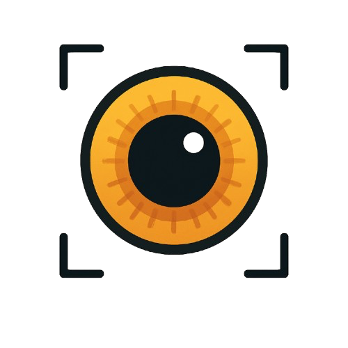

PerchEye SDKAdding facial recognition to your mobile app is simple with PerchEye SDK. Choose your platform and follow these easy steps to get started.
Add the PerchEye SDK to your Android project by adding the dependency to your app's build.gradle file:
// Add the dependency
dependencies {
implementation(files("libs/perch-eye-1.0.3-4.aar"))
}
Initialize the SDK and enroll a face to generate a unique identity hash:
val perchEye = PerchEye(context)
perchEye.init()
perchEye.openTransaction()
val result = perchEye.addImage(bitmap)
if (result == ImageResult.SUCCESS) {
val hash = perchEye.enroll()
// Store hash for future verification
}
perchEye.destroy()
Compare a new face image against the previously enrolled hash:
perchEye.openTransaction()
val result = perchEye.addImage(newBitmap)
if (result == ImageResult.SUCCESS) {
val similarity = perchEye.verify(storedHash)
val isMatch = similarity > 0.8f // Adjust threshold as needed
}
Add the PerchEye framework to your iOS project using CocoaPods:
# Download PerchEye Framework from the official source
# Drag PerchEyeFramework.xcframework into your Xcode project
# Ensure the framework is added to Frameworks, Libraries, and Embedded Content
# Set Embed & Sign for the framework
Initialize the SDK and enroll a face to generate a unique identity hash:
let perchEye = PerchEyeSwift()
perchEye.openTransaction()
let result = perchEye.load(image: uiImage)
if result == .success {
let hash = perchEye.enroll()
// Store hash for future verification
}
perchEye.destroy()
Compare a new face image against the previously enrolled hash:
perchEye.openTransaction()
let result = perchEye.load(image: newUIImage)
if result == .success {
let similarity = perchEye.verify(hash: storedHash)
let isMatch = similarity > 0.8 // Adjust threshold as needed
}
Add the PerchEye plugin to your Flutter project:
# Run this in your Flutter project: flutter pub add perch_eye
Initialize the SDK and enroll a face to generate a unique identity hash:
await PerchEye.init();
await PerchEye.openTransaction();
final result = await PerchEye.addImage(base64Image);
if (result == 'SUCCESS') {
final hash = await PerchEye.enroll();
// Store hash for future verification
}
await PerchEye.destroy();
Compare a new face image against the previously enrolled hash:
await PerchEye.openTransaction();
final result = await PerchEye.addImage(newBase64Image);
if (result == 'SUCCESS') {
final similarity = await PerchEye.verify(storedHash);
final isMatch = similarity > 0.8; // Adjust threshold as needed
}
Install the PerchEye module for React Native:
# Using npm npm install react-native-perch-eye # Using yarn yarn add react-native-perch-eye # For iOS, run pod install cd ios && pod install
Initialize the SDK and enroll a face to generate a unique identity hash:
import { openTransaction, addImage, enroll } from 'react-native-perch-eye';
await openTransaction();
const result = await addImage(base64Image);
if (result === 'SUCCESS') {
const hash = await enroll();
// Store hash for future verification
}
Compare a new face image against the previously enrolled hash:
import { openTransaction, addImage, verify } from 'react-native-perch-eye';
await openTransaction();
const result = await addImage(newBase64Image);
if (result === 'SUCCESS') {
const similarity = await verify(storedHash);
const isMatch = similarity > 0.8; // Adjust threshold as needed
}